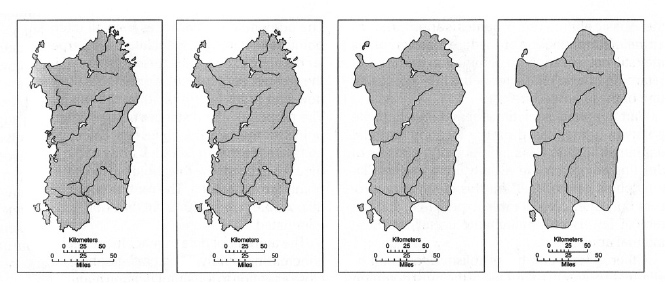
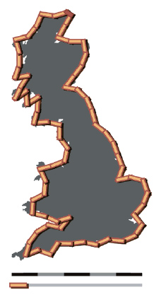
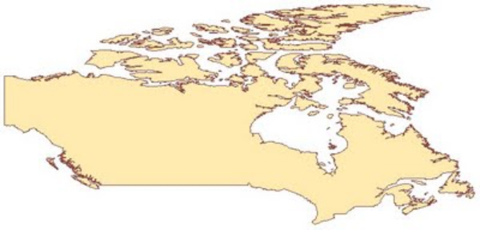
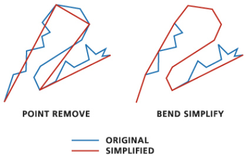
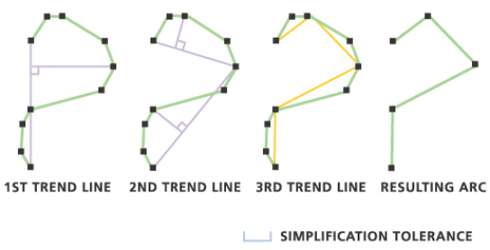
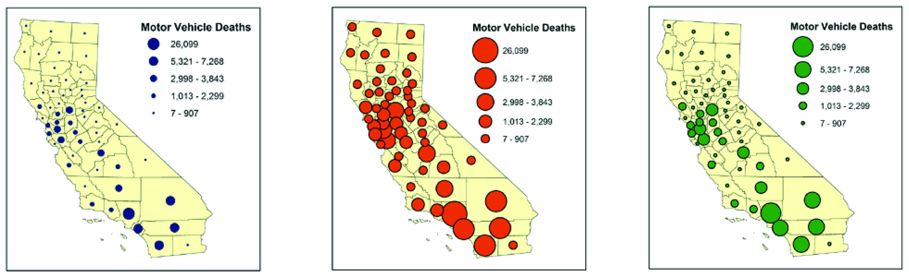

Geospatial Visualization
School of Architecture
Dr. Timothy Norris
tnorris@miami.edu
tnorris@miami.edu
Christopher Mader
cmader@med.miami.edu
cmader@med.miami.edu
Image: accusoft blog
A few exercises
- Use API as service
> load online dynamic data into a GIS - Get OSM Data
> use data from Open Street Map - Georeferencing
> locating external files in geographic space - Creating Data Layer
> drawing in GIS - Creating Layouts
> for printing and export to design programs
Use API as Service - 1
- API - Application Programming Interface
- Sharing of dynamic data across some network protocol (i.e. the internet)
- Include "API" in your search terms (as an alternative to "shapefile")
- Among many other data providers, Arc GIS Online provides data as APIs
- Great for data exploration and online mapping applications
- Not suitable for publication ready maps (hard to cite)
- Find an API endpoint
- Identify metadata
- Copy the URL
- [ sometimes not obvious ]
Use API as Service - 1
- ArcGIS Pro
- Add data to map -> Data From Path
- Paste URL
- QGIS
- Add data to map - ArcGIS REST Server
- Edit the URL and delete everything after .../FeatureServer
- Paste URL
- Click "add to map"
Get OSM Data
- All data released under Open Data Commons Open Database License
- Start at https://www.openstreetmap.org/
- Navigate to area of interest
- Click export
- If the export fails, try other options at lower right (Overpass API is a good place to start)
- QGIS
- Add data to map
- Select all geometry types, click add
- Open attribute tables and explore
- Filter, symbolize, and copy layers as needed
- ArcGIS Pro
- License and activate the Data Interoperability extension
- Use the Data Interoperability toolbox to import the OSM files
- Explore,filter, symbolize, and copy layers as needed
Georeferencing ARC GIS Pro
- For both raster (tiff, jpg) and vector (dxf) data
- ArcGIS Pro Raster
- add layer to map
- click Raster layer: find "Image" panel > georeference
- fit to display, move, scale
- add control points
- ArcGIS Pro Vector
- add layer to map
- click CAD layer group > expand layer group > select one CAD layer
- click "CAD Layer" panel > georeference
- fit to display, move, scale
- add control points
Georeferencing QGIS
- For both raster (tiff, jpg) and vector (dxf) data
- QGIS Vector
- possible but a little complicated
- google "georeference dxf QGIS"
- QGIS Raster
- Plugins - GDAL georeferencer
- Raster > GDAL Georeferencer
- add image to georeferencer
- add control points (from map canvas)
- Settings > Transformation Settings > (Choose Transformation Type)
- "Play" button
- load image in QGIS
Creating a data layer
- ArcGIS Pro
- Find an appropriate location to create a new file in Catalog
- Right click and choose type of layer to create
- Specify parameters (depends on layer type)
- From Edit panel edit layer and add a feature (draw) -> save
- From attribute table edit fields and add one, then enter a value -> save
- QGIS
- Find an appropriate location to create a new file in Browser
- Right click and choose type of layer to create
- Specify parameters (depends on layer type) -> add a field before saving
- Use pencil icon to edit layer and then add tool (point, polygon or line) -> right click to finish
- Enter values for fields and then save with pencil icon
Layouts for Printing and Export
- ArcGIS Pro
- "Insert" Panel > New Layout (choose size)
- Add "Map Frame" and adjust scale and size
- add other elements: title, legend, scalebar
- "Share" Panel > Layout > export
- QGIS
- Project > New Print Layout (create a name)
- right click on page to change "Page Properties"
- Add Item > Add Map (draw rectangle on page)
- add other elements: title, legend, scalebar
- Layout > Export
Simplification and Selection
Classification
Quick Overview
- Generalization
- Selection
- The decision of what geographic phenomena are represented on the map - Simplification
- The decision of what spatial resolution will be used for representing geographic phenomena
- Selection
- Classification
- The decision of how to display attribute information that represents geographic phenomena
Scale Matters
Purpose Matters
“Map Generalization [selection and simplification]: Little white lies and lots of them”
Monmonier, M. (1996 [1991]). How to Lie With Maps. Chicago, University of Chicago Press.
Monmonier, M. (1996 [1991]). How to Lie With Maps. Chicago, University of Chicago Press.
Selection
Scale matters: several examples of selection across different scales

Purpose matters: selection across constant scale where on the left physical geography is emphasized whereas on the right there is a base map good for showing attribute information of non-physical phenomena
Robinson, A. H., J. L. Morrison, et al. (1995 [1953]). Elements of Cartography, sixth edition. USA, John Wiley and Sons.
Generalization
How long is the coastline of Great Britain??


Scale Matters: for a large scale world map, the polygon on the left will be sufficient, but for a poster map of the world more detail will be necessary.
Benoît Mandelbrot (1967). "How Long Is the Coast of Britain? Statistical Self-Similarity and Fractional Dimension", Science, New Series, Vol. 156, No. 3775. (May 5, 1967), pp. 636-638.
Simplification
Too much detail gives more visual weight to the line

Too much detail will make the file size larger

Simplification
ArcMap has two common algorithms
- Point remove
- Bend simplify

QGIS has several tools
- Simplify Geometries
- GRASS - v.generalize

Classification
Classification is not always desirable
-
Attribute data directly linked to the visual variable
- the color is linked to the data (a satellite image)
- the size is linked to the data (a proportional symbol map) - For interval or ratio measurement
Classed: how many classes?
- Clorapleth: 5-7 is recommended
- Chorachromatic: < 7
- How to decide on class divisions?

A non-classed proportional symbol map. Note how you automatically class them in your mind.
Classed
2008 Presidential Election by County
Mark Newman - mejn@umich.edu. Department of Physics and Center for the Study of Complex Systems, University of Michigan. Under creative commons license.
non-Classed
2008 Presidential Election by County with Linear Percentages
Mark Newman - mejn@umich.edu. Department of Physics and Center for the Study of Complex Systems, University of Michigan. Under creative commons license.
Classification
Perceptual Problems


- Be careful with the range of sizes (above)
- Be careful of optical illusions (right)
A few exercises
- Geocoding
> give addresses lat/long coordinates - Joining tables
> attach attributes to spatial geometries
Geocoding
- list of address information, usually comma separated values (csv)
- ArcGIS geocoding service
- Very accurate and up-to-date geocoding engine
- Uses credits - see Understanding Credits
- "Free" online geocoding services
- Census.gov - somewhat accurate
- Texas A&M - needs free account
- geocod.io - first 1000/day free, then you pay
- More, ... google "online geocoders"
- in the GIS ...
- Import as csv with lat/long coordinates as columns
- Google "create x,y points from csv" in [GIS of choice]
Joining tables - 1
- Census data example: attributes and geography come separate
- Get Census data from the "US Census Bureau" (data.census.gov)
- start at https://data.census.gov/cedsci/
- Search and select table
- "Customize Table" and add geography
- Goto "Map" to check
- When ready, return to table > click "Download"
- use IPUMS at https://uma.pop.umn.edu/ as an alternative
- Get geographic data from "Census Geography Program"
- start at https://www.census.gov/programs-surveys/geography.html
- Look for "Tiger/Line Geodatabases"
- Select "State Level Geodatbases" and your state
- -- OR --
- Look for :cartographic Boundary Files"
- Choose type and scale -> download
Joining tables - 2
- Census data example: attributes and geography come separate
- in the GIS ...
- Import as csv with no geometries
> must delete one header row first - Import selected layers from geodatabase or shapefile
> must include geometry from Census data - In geometry layer, find "Joins" in the layer properties
> either double click or right click - Join based on GEO_ID and/or AFFGEOID (or some other combination)
- Symbolize from layer properties
- Import as csv with no geometries